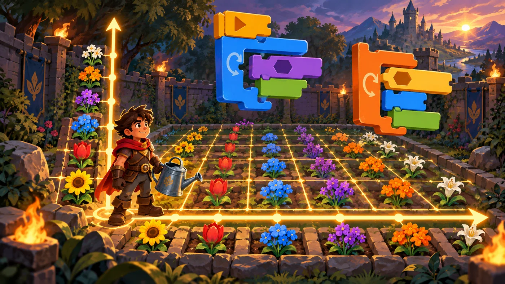
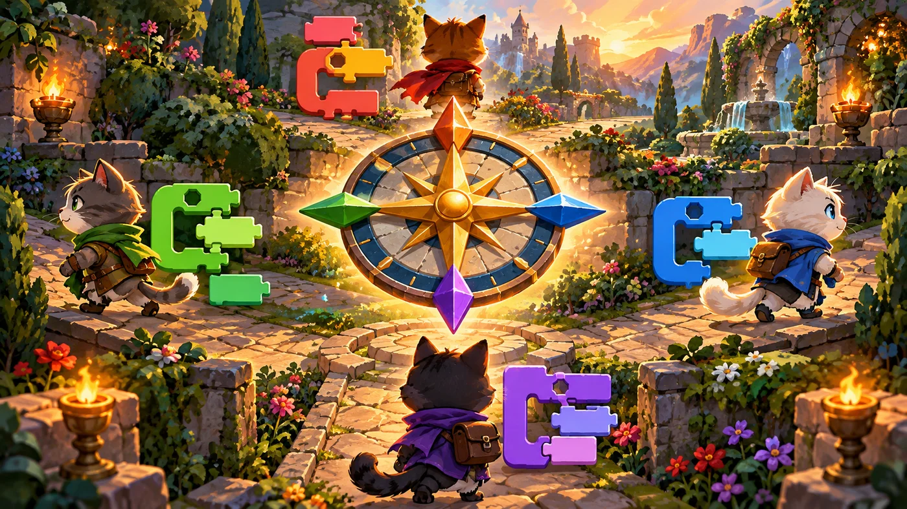

扣哒考级 · GESP 图形化 一级 · 第 3 单元 | 积木花园 BLOCKBLOOM GARDEN
花径漫步 坐标、角度与运动
Coordinates, Angles and Motion

安雅
红发队长 · 你的旅伴
花径是一张巨大的格子网，踩上去会泛起淡淡的光。安雅蹲下来，在网格上划了两条线：
一条横的、一条竖的，在正中间打了个结。
"从这里开始算。"她说，"往右是正、往左是负；往上是正、往下是负。 记住这个，花园里没有你走不到的地方。"
"从这里开始算。"她说，"往右是正、往左是负；往上是正、往下是负。 记住这个，花园里没有你走不到的地方。"
安雅 · 红发队长
这一单元要记的东西有点多，但都很好记：两个坐标 ±240 和 ±180、四个角度 0/90/180/-90。考卷上最爱出一段脚本让你算"角色最后停在哪"——只要把坐标和角度分清楚，这类题就是送分题。

assets/illustrations/scratch-L1-03-01_garden_grid.webp
【配图位】花园被铺成发光坐标网格，X 向右、Y 向上，小英雄抱着洒水壶站在原点，花坛沿坐标轴编号。（提示词见《GESP配图清单与AI绘图提示词》第四节 1-3）
0 单元导语与目标
Before We Start
0.1 学习目标
- 看懂舞台的坐标系：x 轴管左右、y 轴管上下，正中间是原点；
- 会用移动、移到 x: y:、将坐标增加三组积木控制位置；
- 理解"方向 90 是向右、0 是向上"，会用左转、右转改变朝向；
- 知道负数、小数在坐标里的意义，会用随机数让效果变得不可预测；
- 会用"碰到边缘就反弹"做出角色在边界来回弹跳的效果。
0.2 考纲对照
| 考纲知识块 | 考纲要求 | 本单元小节 |
|---|---|---|
| 3 编程数学 | 坐标系、坐标变化，小数、负数、随机数，顺逆时针、角度等 | 1.1～1.3、4.2 |
| 6 角色的操作 | 移动，旋转，控制运动方向，碰到边缘反弹 | 2.1～2.3、3.1～3.3、4.1 |
这一单元是一级里"数学味"最重的一节，但也最有用——后面所有让角色动起来的脚本， 都建立在这几块积木上。
1 舞台是一张坐标纸
The Coordinate Plane
1.1 x 轴与 y 轴
花径被铺成了一张发光的格子网。安雅蹲下来，在网线上画了两条线：
图 1（SVG）：舞台的 x 轴与 y 轴
打个比方：把舞台想成一张方格纸，原点就是纸的中心，插着一枚图钉。从图钉往右走 100 步，你就到了 x = 100；往上走 50 步，就到了 y = 50。两个数合起来写成
(100, 50)，就是你的位置坐标。
1.2 舞台的四个角
| 位置 | 坐标 | 记忆方法 |
|---|---|---|
| 正中间 | (0, 0) | 原点 |
| 最右边 | (240, 0) | x 最大是 240 |
| 最左边 | (-240, 0) | x 最小是 -240 |
| 最上边 | (0, 180) | y 最大是 180 |
| 最下边 | (0, -180) | y 最小是 -180 |
| 右上角 | (240, 180) | x、y 都取最大值 |
| 左下角 | (-240, -180) | x、y 都取最小值 |
记住三个数就够了：舞台宽 480、高 360，所以 x 的范围是 -240 ~ 240，y 的范围是 -180 ~ 180。考卷上问"角色走到最右边时 x 是多少"，答案就是 240。
1.3 用坐标说位置
在图形化编程里，"角色在哪里"这个问题，永远用一个坐标对来回答。看这两块积木：
重点示例：两种定位方式
图形化积木
读法 第一块"啪"地一下出现在指定位置；第二块用 1 秒慢慢滑过去，过程看得见
2 让角色动起来
Making It Move
2.1 移动 10 步
最常用的运动积木是这一块。它和坐标有关，但不用你写坐标：
重点示例：跟着朝向走
图形化积木
要点 "移动 100 步"是沿着角色当前面对的方向走 100 步，方向是 90（向右），所以它往右走
打个比方："移动 10 步"就像蒙着眼睛往前走 10 步——走多远是确定的，往哪儿走由你的朝向决定。所以想让它往别的方向走，先改朝向，再移动。
2.2 移到 x: y:
要让角色"直接站到某个位置"，用这两块：
重点示例：一步到位
图形化积木
读法 直接给终点坐标，角色就出现在那里；带"在……秒内滑行"的会走出一条看得见的轨迹
2.3 将坐标增加
还有一组积木，是在原来的位置上再加一点：
重点示例：在原来的基础上挪一点
图形化积木
要点 "增加"是相对移动：不管现在在哪，往右挪 10；"设为"是绝对定位：不管现在在哪，直接变成 0
这两组一定要分清：移到 / 设为——给的是"目的地"，和现在在哪无关；
将坐标增加——给的是"位移量"，效果取决于现在在哪。
考试里最爱用同一段脚本问"执行后角色在哪"，考的就是这两者的区别。
将坐标增加——给的是"位移量"，效果取决于现在在哪。
考试里最爱用同一段脚本问"执行后角色在哪"，考的就是这两者的区别。
3 方向与角度
Direction and Angles
3.1 面向 90 方向
图形化编程里的角度和数学课不太一样，一定要记牢这四个方向：
图 2（SVG）：四个方向对应的角度

assets/illustrations/scratch-L1-03-02_angle_compass.webp
【配图位】花园小径上空悬浮着罗盘玫瑰，四个方向标注度数，四角各有一只小猫朝不同方向。（提示词见《GESP配图清单与AI绘图提示词》第四节 1-3）
重点示例：先定朝向，再出发
图形化积木
要点 "面向 0 方向"是朝上，所以角色会往上走 50 步
3.2 左转与右转
重点示例：转的是"角度"，不是"位置"
图形化积木
要点 右转是顺时针拧，左转是逆时针拧；角色只是在原地扭头，位置一动没动
打个比方：面向是把头一次扭到指定角度；右转 15 度是在现在的基础上顺时针拧 15 度。就像指南针：一个是"把指针拨到 90"，一个是"再往右拨一格"。
3.3 三种旋转模式
角色扭头的时候，它的"身体"到底怎么转？点角色区里的小三角能改这个设置：
图 3（SVG）：三种旋转模式的区别
重点示例：设置旋转模式
图形化积木
要点 这块积木放在脚本开头，后面所有的转向都会按这个规则来
4 边界、小数与随机数
Edges, Decimals and Random
4.1 碰到边缘就反弹
花园的围墙就是舞台的边缘。想让角色一直"弹"下去，只需两块积木：
重点示例：在围墙里来回弹
图形化积木
读法 一直走 → 一碰到边缘就把方向反过来，于是永远在围墙里跑
注意它和"侦测"的区别："碰到边缘就反弹"是运动分类里的一块积木，它自己就会完成"判断 + 转向"两件事；而"碰到边缘？"是侦测分类里的六边形积木，只负责判断，不会自己反弹。
4.2 负数、小数与随机数
图 4（SVG）：正数、负数与小数
重点示例：让位置变得不可预测
图形化积木
要点 把绿色的随机数积木塞进坐标槽里，每次运行角色都会出现在不同的位置
打个比方：随机数就像掷骰子——你只规定范围（比如 -240 到 240），具体落在哪儿由它自己决定。注意范围要写对：x 在 ±240 之间，y 在 ±180 之间，超出舞台角色就看不见了。
5 代码实战
Level Practice
这一关要你换个思路：不是"走一步"，而是"改变方向再走"。 这正是"面向"积木最典型的用法。
关卡 20
一个方块
进入关卡 →
故事：
花径在这里拐了三个弯：先往上，再往左，然后往下，最后往右。
路是连通的，但每一步的朝向都不一样。你要做的，是在每一段路前先把方向改对。
思路：把整条路线拆成四段：上 2、左 3、下 2、右 1。 每一段都由"面向某个方向"和"移动若干步"两块积木组成——方向对了，路就走对了。
重点示例：一段路两块积木
图形化积木
读法 0 朝上、-90 朝左、180 朝下——每改一次朝向，后面那块"移动"走的就是新方向
自己试一试：最后一段"向右 1 步"还没写。想一想向右对应哪个角度（提示：90 度），把两块积木补在最后。
你会发现，"面向 + 移动"这两块积木几乎能走出任何一条由直线段组成的路线。 下一单元我们会给这条路加上"什么时候该拐弯"的判断。
回头看看上一单元那一关：当时我们用"面向 + 移动"走出了方框。现在你知道了——那其实就是坐标与角度的组合，只不过当时还没给它起名字。
去扣哒世界闯这一关 →
6 常见陷阱
Common Traps
陷阱 1：把"面向 90"当成"往右走 90 步"。"面向"只改朝向，位置一点不动。
正确做法：要往前走，还得再接一块"移动……步"。
正确做法：要往前走，还得再接一块"移动……步"。
陷阱 2：把"左转 / 右转"当成"往左 / 往右移动"。这两块积木是原地扭身，位置不变，只改朝向。
正确理解：带"转"字的管方向，带"移动"的管位置。
正确理解：带"转"字的管方向，带"移动"的管位置。
陷阱 3：以为角度 0 是向右。图形化编程里 0 度朝上，90 度才朝右，180 度朝下，-90 度朝左。
正确记法：把 0 想象成中午 12 点的钟面，顺时针走一圈：右是 3 点（90）、下是 6 点（180）、左是 9 点（-90）。
正确记法：把 0 想象成中午 12 点的钟面，顺时针走一圈：右是 3 点（90）、下是 6 点（180）、左是 9 点（-90）。
陷阱 4：把"移到 x: y:"和"将 x/y 坐标增加"混用。"移到"给的是终点，"增加"给的是位移。
正确做法：题目问"执行后角色在哪"时，一定要先看清是"移到"还是"增加"，再动手算。
正确做法：题目问"执行后角色在哪"时，一定要先看清是"移到"还是"增加"，再动手算。
7 题目练习
Practice
前 2 题改编自 2026 年 9 月 · 图形化编程 一级 第 7 题、2026 年 6 月 · 图形化编程 二级 第 3 题，其余为原创练习题。
改编自 2026 年 9 月 · 图形化编程 一 级 · 第 7 题单选题
花园里有一个箭头角色，方向初始为 90 度。鼠标点击这个箭头三次，每次执行"右转 45 度"。
点击三次后，箭头朝向哪个方向（ ）。
点击三次后，箭头朝向哪个方向（ ）。
A.45 度
B.90 度
C.135 度
D.180 度
B.90 度
C.135 度
D.180 度
查看答案与详解
答案：C。方向是"叠着转"的：90 度是朝右，每次右转（顺时针）45 度——
90 → 135 → 180 → 225（也就是 -135）。
这里要看清两件事：① 起点是 90 度不是 0 度；②"转三次"是加三次，不是乘三次。
A、B 错：那是转一次或没转的结果；
D 错：180 度只转了两次。
对应小节3.1、3.2 方向与左右转。
90 → 135 → 180 → 225（也就是 -135）。
这里要看清两件事：① 起点是 90 度不是 0 度；②"转三次"是加三次，不是乘三次。
A、B 错：那是转一次或没转的结果；
D 错：180 度只转了两次。
对应小节3.1、3.2 方向与左右转。
改编自 2026 年 6 月 · 图形化编程 二 级 · 第 3 题单选题
默认小猫角色，当前坐标是 (10, -10)。依次执行"将 x 坐标增加 10"和"将 x 坐标增加 10"之后，小猫的坐标是（ ）。
A.(10, -10)
B.(30, -10)
C.(20, -10)
D.(25, -5)
B.(30, -10)
C.(20, -10)
D.(25, -5)
查看答案与详解
答案：B。"将 x 坐标增加"是在原来的位置上再挪一点：
10 → 20 → 30，而 y 坐标一动没动，还是 -10。
A 错：那是"一次都没执行"的结果；
C 错：那是只执行了一次的结果；
D 错：y 坐标没有任何积木去改它，不该变。
小提醒："增加"是相对移动，做这类题一定要从当前坐标往下算。
对应小节2.3 将坐标增加。
10 → 20 → 30，而 y 坐标一动没动，还是 -10。
A 错：那是"一次都没执行"的结果；
C 错：那是只执行了一次的结果；
D 错：y 坐标没有任何积木去改它，不该变。
小提醒："增加"是相对移动，做这类题一定要从当前坐标往下算。
对应小节2.3 将坐标增加。
原创练习题单选题
花园的小径是一条直线。角色当前的坐标是 (0, 0)，朝向 90 度。执行"移动 100 步"之后，它的坐标最可能是（ ）。
A.(0, 100)
B.(100, 0)
C.(-100, 0)
D.(0, -100)
B.(100, 0)
C.(-100, 0)
D.(0, -100)
查看答案与详解
答案：B。"移动"是按当前朝向走，而 90 度正好是向右，所以 x 从 0 变成 100、y 不变。
A 错：那是朝上走的结果（0 度）；
C 错：那是朝左走的结果（-90 度）；
D 错：那是朝下走的结果（180 度）。
对应小节3.1 四个方向的角度；2.1 移动。
A 错：那是朝上走的结果（0 度）；
C 错：那是朝左走的结果（-90 度）；
D 错：那是朝下走的结果（180 度）。
对应小节3.1 四个方向的角度；2.1 移动。
原创练习题单选题
角色当前坐标是 (50, 20)。依次执行"将 x 坐标增加 -30"和"将 y 坐标增加 40"之后，它的坐标是（ ）。
A.(20, 60)
B.(-30, 40)
C.(80, -20)
D.(50, 20)
B.(-30, 40)
C.(80, -20)
D.(50, 20)
查看答案与详解
答案：A。"将坐标增加"是在原来位置上再加一点：
x：50 + (-30) = 20；y：20 + 40 = 60。
易错点：增加一个负数就是往相反方向挪——"增加 -30"等于"往左挪 30"。
对应小节2.3 将坐标增加。
x：50 + (-30) = 20；y：20 + 40 = 60。
易错点：增加一个负数就是往相反方向挪——"增加 -30"等于"往左挪 30"。
对应小节2.3 将坐标增加。
原创练习题单选题
要让角色一直沿着墙面来回弹跳，下面哪一组积木最合适（ ）。
A.重复执行：移动 6 步、碰到边缘就反弹
B.重复执行：移到 x: 0 y: 0
C.重复执行：右转 15 度
D.重复执行：将大小增加 1
B.重复执行：移到 x: 0 y: 0
C.重复执行：右转 15 度
D.重复执行：将大小增加 1
查看答案与详解
答案：A。一边走一边检查边缘，撞上就把方向反过来，于是永远在围墙里跑。
B 错：每轮都回到原点，角色根本没在动；
C 错：只是原地转圈，位置不动；
D 错：那是外观积木，只会让角色越来越大。
对应小节4.1 碰到边缘就反弹。
B 错：每轮都回到原点，角色根本没在动；
C 错：只是原地转圈，位置不动；
D 错：那是外观积木，只会让角色越来越大。
对应小节4.1 碰到边缘就反弹。
原创练习题多选题
下面关于角度的说法，哪些是正确的（ ）。
A.面向 0 方向是朝上
B.面向 90 方向是朝右
C.面向 180 方向是朝左
D.面向 -90 方向是朝左
B.面向 90 方向是朝右
C.面向 180 方向是朝左
D.面向 -90 方向是朝左
查看答案与详解
答案：A、B、D。0 朝上、90 朝右、180 朝下、-90 朝左——顺时针一圈正好 360 度。
C 错：180 度是朝下，朝左的是 -90 度（也就是 270 度）。
小技巧：画一个钟面，12 点写 0、3 点写 90、6 点写 180、9 点写 -90，一眼就能对出来。
对应小节3.1 四个方向的角度。
C 错：180 度是朝下，朝左的是 -90 度（也就是 270 度）。
小技巧：画一个钟面，12 点写 0、3 点写 90、6 点写 180、9 点写 -90，一眼就能对出来。
对应小节3.1 四个方向的角度。
原创练习题判断题
在图形化编程中，"右转 15 度"会让角色向右移动 15 步。（ ）
查看答案与详解
答案：错误（×）。"右转"改的是朝向，角色只是在原地顺时针扭身，位置完全没有变化。
要让它真的向右走，得先"面向 90 方向"，再"移动……步"。
对应小节3.2 左转与右转。
要让它真的向右走，得先"面向 90 方向"，再"移动……步"。
对应小节3.2 左转与右转。
8 本单元小结
Unit Summary

塔林 · 花园的守门人
今天你给舞台装上了两把尺子：坐标说"在哪"，角度说"朝哪"。
把这四块积木记牢——移到 x: y:、将坐标增加、面向、移动——
一级卷子里的运动题就基本都在你的射程内了。
你在花径上学到了什么
- 坐标系：x 管左右（±240），y 管上下（±180），正中间是原点 (0, 0)；
- 两种定位：移到 / 设为是"目的地"，将坐标增加是"挪一点"；
- 四个角度：0 上、90 右、180 下、-90 左；左转右转只改朝向不改位置；
- 边界与随机：碰到边缘就反弹让角色在围墙里跑，随机数让位置不可预测。
下一站：会听懂话的喷泉
现在角色会走了，可它还"不会听话"——你必须点绿旗它才动，而且它看不见任何东西。 下一单元我们给它装上耳朵和眼睛：事件让它被叫醒，侦测让它能看见你在哪。